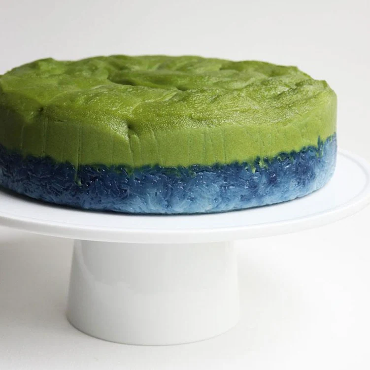

Home
Kueh Salat

Description
Kueh Salat is a beloved traditional Malay and Peranakan dessert consisting of two distinct, flavorful layers: a bottom layer of glutinous rice infused with rich coconut milk and lightly salted for balance, and a smooth, vibrant green top layer made from a custard of pandan juice, coconut milk, eggs, and sugar. The combination of creamy pandan custard and chewy coconut rice creates a harmonious blend of textures and flavors—fragrant, slightly salty, and gently sweet. Often enjoyed as a tea-time treat or festive delicacy, Kueh Salat showcases the rich culinary heritage of Southeast Asia through its simplicity and elegance.
Ingredients
- 300g glutinous rice (soaked for at least 4 hours or overnight)
- 200ml thick coconut milk
- Salt
- S few drops of blue pea flower extract (for natural blue coloring)
- 3 large eggs
- 180ml pandan juice (made by blending pandan leaves with water and straining)
- 120g sugar
- 50g plain flour
- 25g cornflour
Steps
- Soak 300g glutinous rice for at least 4 hours or overnight.
- Drain the rice and mix with coconut milk, salt and blue pea flower extract.
- Transfer rice to a greased 8-inch square or round steaming pan.
- Steam over medium heat for 20 to 25 minutes or until fully cooked and tender.
- Once done, press the rice firmly into a compact, even layer using a spatula or the back of a spoon. Keep warm.
- In a bowl, whisk together eggs, coconut milk, pandan juice, sugar, plain flour, cornflour and salt.
- Strain the mixture to remove lumps and bubbles for a smoother finish.
- Pour the custard over the pressed rice layer (tap the pan lightly to remove air bubbles).
- Steam over low heat for 30 to 40 minutes, or until the custard sets gently (a skewer should come out mostly clean).
- Once done, let it cool completely (1 to 2 hours) before cutting to ensure clean slices.